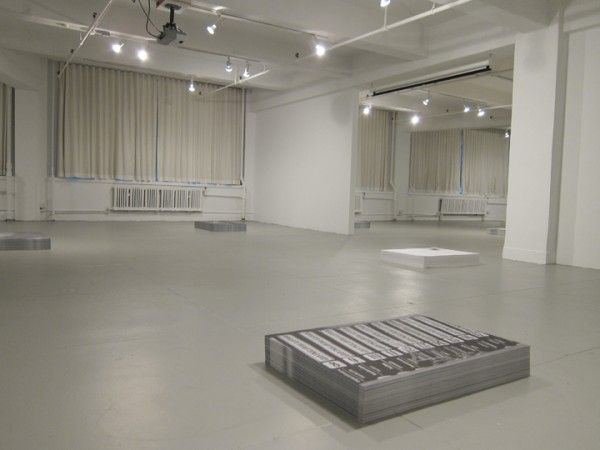

-
Active Desire: all we ever wanted at EFA
by Daniel Pearce November 17, 2010
Nothing activates the acquisitive impulse like large swathes of free paper: I just can’t refuse. Present them in separate stacks and I’ll take two of each. To think: I don’t need permission! Still reeling from the prohibitive expensiveness of the recent Art Book Fair, and still feeling plenty desirous, I visited EFA Project Space earlier this week knowing that some of these baser itches would be scratched. Indeed, I left the space with many posters, and was even provided a rubber band before exiting. The group show currently mounted there, all we ever wanted was everything, consists of ten stacks of posters, all for the taking, with each stack given the polite radius of empty floor space that would likely surround a more conventional art object in a similar setting. galeria perdida, the elusive cooperative that organized the show, invited nine accomplished artists to produce a black-and-white, 37” x 27” poster, to be reproduced in editions of 1,000. (Shannon Ebner, with her two smaller posters, is the exception.) The show also includes a newsprint “literary contribution” from Michael Ned Holte, who emphasizes the show’s engagement with a radical tradition and its avoidance of “an unspoken distain [sic] for the products of mechanical reproduction.”
Despite the show’s professed “interest in the cultural and political history the poster has served,” much of that history is elided here. When I first encountered Emory Douglas’s posters, which were part of a Douglas retrospective at the New Museum last year, I felt as though each one sprang from a deep knowledge of The Poster’s potential power. Douglas’s posters—armed and vertical, with the thick blocks of primary color that characterized early lithographic prints—were on my mind during the time I spent in all we ever wanted. Sure, one isn’t invited to remove a Douglas poster from the New Museum’s premises, but the boldness and urgency of his work offers a countervailing idea of the poster’s history and function, a counterpoint to the quietist, prostrate generosity of all we ever. Spencer Finch’s attractive piece is a perfect example of this disagreement: What looks like a photo of iced and dappled ground, the poster is soft, decorative, and pleasing to the eye. It is not in the least bit urgent, and it is resolutely not concerned with the swift transmission of a message.
Rather, the historical precedent that hangs mightily over all we ever wanted is the work of Felix Gonzalez-Torres. The presentation, the tone, the palette—these seem largely inherited from the late artist (though much of his mortal weight proves recessive). From a distance, the stacks look like impenetrable rectangular cubes, but are the opposite—gifts!—and they boast additional qualities that are central to Gonzalez-Torres’s poster pieces, namely a fascination with the stacks’ gradual depletion and diffusion. These qualities appear as wistful here as they did at the source. The allusion is in many ways very moving, as few contemporary artists have been as beloved, and few losses as felt.
My favorite artist in the show, Danh Vo, elsewhere owns his indebtedness to Gonzalez-Torres, having installed one phase of the that artist’s retrospective at WIELS in Brussels. Vo’s work is so mired in personal significance and private history that one feels like a pervert for hazarding an explanation of it. This probably applies to his poster here, which shows the reflective placard beneath Lincoln Borglum’s bust of hist father – Gutzon Borglum, the visionary architect of Mt. Rushmore – that stands in front of that monument’s visitors’ center. The very idea that this bust exists—that a son could humbly memorialize his father in the very medium that the latter had so colossally mastered—is amazing to begin with, and painfully sweet. As an artist who has included his father’s effects in his own work, this bust must be doubly redolent for Vo, who seems interested in different kinds of paternity.
Mathias Poledna’s contribution both belongs to and lampoons an entirely different tradition. If popular posters have been effective by representing an idea in a rudimentary and attention-grabbing way, Poledna’s wins by losing: His poster depicts two handsome, albeit diminutive, Rolex watches, both of which would make an ordinary watch-lover salivate, if it weren’t for their damned reduced size (they’re practically thumbnails) and the mitigating black-and-white. His is the only work to address the medium’s advertising utility, its complicity with, rather than repudiation of, capitalism and consumerism.
Poledna points to the dominant narrative largely ignored throughout the show: that posters have historically been – and might intrinsically be – designed to activate different sets of desires. (Even Emory Douglas’s posters, which seem so anticapitalist and revolutionary, got people thinking aspirationally.) For a show so concerned with the function of the medium, all we ever wanted contrives the viewer’s desire in an unintuitive way. I was continually smiling while walking through EFA Project Space, aware that, despite the absence of expensive and singular art objects, a gallery has never felt like more of a retail environment to me. If posters have traditionally activated a desire for the objects they display—for rock concerts, for bath products, for political movements and candidates—it is uncannily appropriate that the gallery here should activate a desire for the posters it contains. (“I want that one, and that one.…” The very title of the show says as much.) As the medium is the message, this gallery is the poster (through December 4), and it will give you a rubber band.